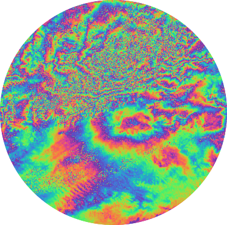
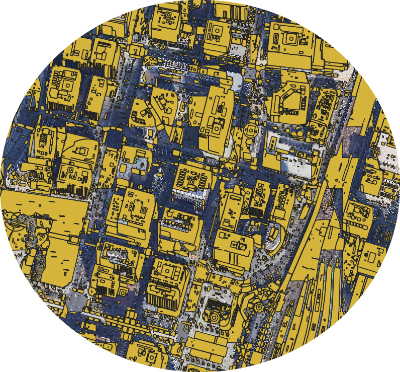
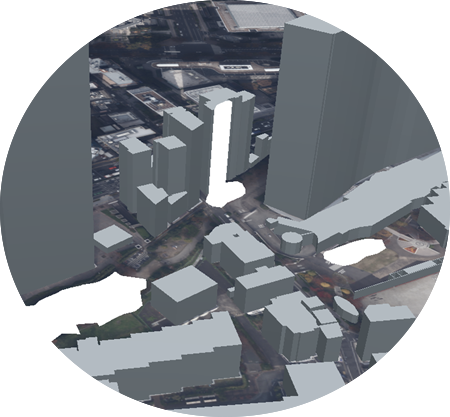
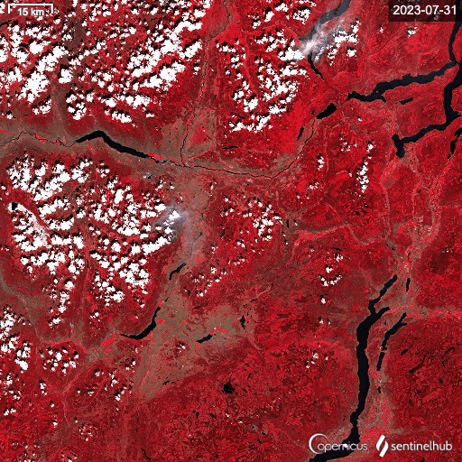
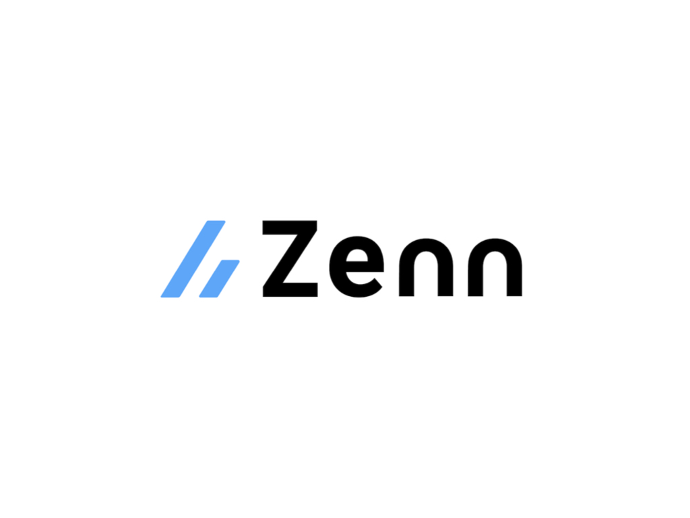
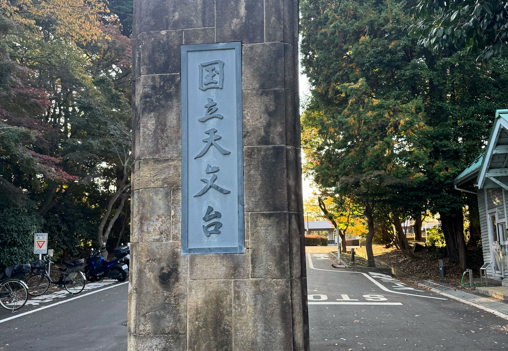
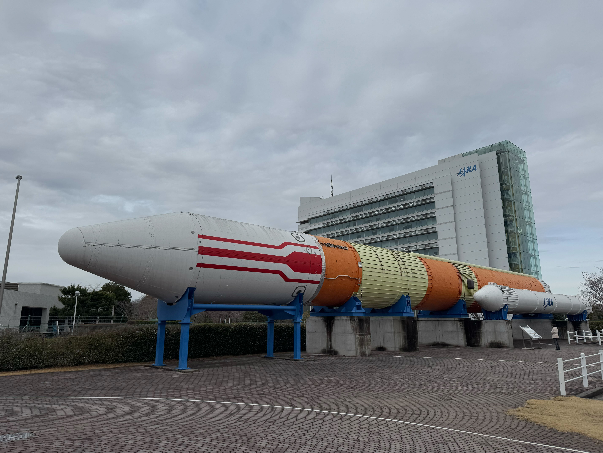

Overview
安井 秀輔(Syusuke Yasui)という名のアザラシさんの自己紹介ページです。
Satellite Data Fleeeeeeeeeak!
衛星データ解析、レーダー・信号解析、コンピュータービジョン・データサイエンス、点群データ処理、GISデータ処理などの技術に興味を持っています。 お仕事としては、衛星データ処理講師や公演会登壇、技術コンサルなどの活動も行っています。また、Zenn, 宙畑, 技術書籍の執筆も行っています。
GALLERY
Interest
-

光学画像解析
-

レーダー・信号解析
-

コンピュータービジョン・AI・データサイエンス
-

地理空間(GIS)・点群データ・3D処理
Work
所属: スペースシフト 技術開発部 Core Tech Section Lead・テックリード
SAR 解析 & 研究開発

活動:
衛星データ処理の講師や公演会登壇

副業:
技術コンサルや技術書・Webライター
Article

Zenn: 記事一覧
Zenn 記事一覧
緊急観測と観測計画の調べ方
地政学・インテリジェンス用語を調べてみた
SAR Python 入門本の上梓記念記事 (書籍の難易度・分野・著者のおすすめや想い)
【スクショ付き】Claude の請求書・領収書を取得する方法
【スクショ付き】Gemini 請求書を取得する方法
【スクショ付き】ChatGPT の請求書・領収書を取得する方法
【実践】SAR衛星画像カラー表示のPython実装
【論文】基盤モデル DINOv3 を読んで動かしてみた
無料公開の DEM 一覧
データサイエンティストが生後4ヶ月までの成長を可視化する
ぴよログの記録データを抽出する方法
【QGIS実践】密度解析 QGIS のプラグイン (Density Analysis)
リモートセンシング領域の基盤モデルと論文まとめ
新人パパが新生児を１ヶ月育てた時に必要だったものまとめ
日本衛星データコミュニティの勉強会・雑談会の資料
衛星データのコミュニティを作成しました
OCEAN COLOR: (NASA の衛星オープンデータ) の Python での取得と可視化
光学衛星の大気補正とその実装
SenNet + HOA 上位解法と復習まとめ
Segmentation Models Pytorch の BackBone をカスタムする方法
災害時に見るべきリモセン情報まとめ
速攻単純 Sentinel-2 光学衛星の雲除去をする方法
光学衛星画像から位置情報埋め込みの基盤モデル SatCLIP の実装と使い方
QGIS の SAM(Segmentation Anything Model)のプラグインで自動アノテーションをする方法
地形の高さ (DEM, DSM, nDSM) を点群データ(オープンナガサキ)から生成する
geom 0 is INVALID: Self-intersection 自己交差エラーとその回避
衛星画像を DEM を使って地表面情報で 3D 可視化する方法
Kaggle HuBMAP2023 上位解法まとめと復習
１歩目の衛星データの取得判読解析予測の基礎
日本の大手町の航空・衛星の画像を SAM (AI)で推論してみた
Solafune 衛星画像の5倍超解像度化 (for OSS) コンペの Pytorch Lightning Baseline
オウンドメディア宙畑へのリンク
寄稿・制作協力・関係者 記事の一覧の表示
SAR画像で使用されるフィルターの基本と実装例、機械学習への応用【SARデータ解析者への道】
【衛星データ×基盤モデル】Tellus AI PlaygroundでAIモデルを動かしてみた！
YAMAPの活動日記からやまびこが綺麗に返ってくる場所を探して机上検証してみた
衛星データでここまでできる！ ヤッホーが綺麗に返ってくる場所（やまびこスポット）の解析とシミュレーション
GOSAT-GW（いぶきGW）の打上げはH-IIAロケットのラストフライトで！ GOSAT-GWのスペックと役割
【徹底解説】第3の分解能に特化したハイパースペクトルデータの概要と解析方法、代表企業まとめ
グランプリを受賞した「街の”未来”を描く地図」とは？ PLATEAU AWARD 2024の結果と3Dモデル&衛星データの融合例
SAR の特徴量(反射強度、周波数、偏波、位相、干渉)【SARデータ解析者への道】
現地、地上、衛星データで読み解く台風の軌跡 ～現地観測から進路予測まで挑戦してみました～
SAR画像を解析する際に理解しておきたい基礎処理【SARデータ解析者への道】
衛星データ利用における 「Tip & Cue」とは？ 自動・自律的な観測のメリットとその実用への期待
ICEYEが洪水時にリアルタイムに災害状況を知ることができるFlood Insightsの提供を開始
レーダーの基礎から学ぶSAR(合成開口レーダー)の原理と奇跡【SARデータ解析者への道】
衛星データのアノテーション方法～QGISでのポリゴン作成と利用する際の注意点～
衛星データから桜の開花検知によるお花見スポット探索の実装と3Dでの表現【MAXARの衛星データでやってみた】
IBM と NASA の「Largest Geospatial AI」とは？ 複数衛星のデータ融合と衛星基盤モデルによる先端技術の利用とその Python実装
Sentinel-2を用いた雲検知モデルから被雲率を求める方法とその精度向上【学習済みモデル付き】【コード公開】
【8/31（木）イベント開催】スペースシフトをお招きし、Tellus利用の開発サービスについて語っていただく「Tellus Satellite Cafe vol.2」
駐車場に停まっている車両の検知精度アップ？ 衛星データによる車両の回転検知とその実装方法
教師データがない時どうする？ 衛星データを用いた浸水深予測の設計と実装手順【Githubでコードも紹介】
GitHubの使い方と宙畑のGitHubアカウント紹介~実際にコードも動かしてみよう~
解析実例とともに学ぶNDVI（正規化植生指標）の基本と扱う上での注意点【コード付き】
GDALのおすすめコマンド5選と使用例【地理空間処理のいろは】
こちらは、宙畑さんからのインタビュー記事です。
画像提供 © 宙畑 Owned by Tellus
「空からガロア理論の本が降ってきた」数学専攻からAI企業を経て、SAR衛星の魅力にハマったテックリードのキャリア遍歴
Account
Activity

登壇情報:
Tellus Cafe vol.2Microsoft Meets Startups・パネルディスカッション
PLATEAU AWARD日本リモートセンシング学会 特別公演・パネルディスカッション
学会参加:
＜国際カンファレンス＞
ECML, MVA, IGRASS, IEEE, EDHP
＜国内学会＞
IEEE Geoscience and Remote Sensing Society Japan Chapter (SAR Workshop 2023), JpGU (日本地球惑星科学連合) IEEE Geoscience and Remote Sensing Society Japan Chapter, 宇宙科学技術連合講演会（宇科連66: ウカレン）日本リモートセンシング学会 第78回（令和7年度春季）学術講演会開催

コンペティション受賞:
国土交通省 PLATEAU AWARD 2024 PLATEAU賞

Space Shift ブログより引用
NEDO Supply Chain Data Challenge システム開発部門（災害）1位
ChaBuD2023 2nd, Solafune GenerativeAI 3rd
MVA2023 Res 5th, SpaceNet8 7th, SpaceNet9 6th
国内特許・海外特許:
特許第 7534744 号 RAW 解析
特許第 7571960 号 Vコンステ
「こめじゃらし」の繁栄のお手伝い:
© Kurumaru All Rights Reserved.
こめじゃらしを登場させてます。こめじゃらしシリーズの解説記事や書籍では、大変盛況です。
ラインスタンプも好評発売中です。
こめじゃらしのLINEスタンプ: 公式LINEスタンプ
X アカウント: 公式こめじゃらし
宇宙機関の見学活動

国立天文台 三鷹キャンパス: 記事: 国立天文台を見学した

JAXA 筑波宇宙センター: 記事: JAXA 筑波宇宙センターを見学した
Contact
-
個人 E-Mail: syuchimu@gmail.com
ご連絡お待ちしております。
-